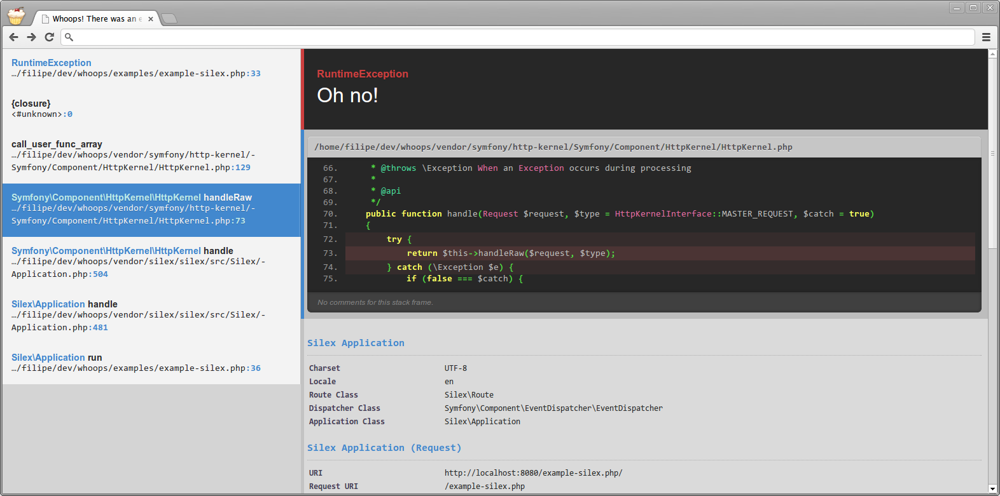
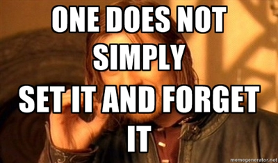

The Thermodynamics of Software Systems
(yes, really)
David Stanley
- Sr. Application Developer for MMGY Global
- @davidstanley01
Disclaimers
- This analogy assumes a non-trivial softare system.
- No analogy is perfect. They all break down at some point.
- This analogy is no different. Some parts are a better fit than others.
- If it doesn't work, have another drink.
http://www.uni-marburg.de/fb15/ag-germano/research/equations.png
http://s214.photobucket.com/user/anarchy_racing_customz/media/3r6blb_zps48ee9ff7.jpg.html
The Laws
0th Law
If two systems are both in thermal equilibrium with a third then they are in thermal equilibrium with each other.
TRANSLATION: Everyone in the casino must bet.
1st Law
The increase in internal energy of a body is equal to the heat supplied to the body minus work done by the body.
TRANSLATION: In the long run, the house always wins.
2nd Law
Over time, differences in temperature, pressure, and chemical potential decrease in an isolated non-gravitational physical system, leading eventually to a state of thermodynamic equilibrium.
TRANSLATION: In the long run, you can only hope to break even.
3rd Law
The entropy of a perfect crystal at absolute zero is exactly equal to zero.
TRANSLATION: You can't quit.
0th Law - applied
Everything is connected.
or
Nothing exists in isolation
Everything depends upon something
- Operating System
- Database
- DNS
- External Services
The circle of life
http://www.fanpop.com/clubs/the-lion-king/images/15385011/title/lion-king-part-1-circle-life-screencap
Self-reliance, sort of
- Code defensively
- Fail gracefuly
Defensive coding
Default clauses on switch statements
Validate inputs and encode outputs
Log errors and LOOK AT THE LOG
Write tests that cover edge cases, too
Fail gracefully
Whoops
https://github.com/filp/whoops
1st Law - applied
Value = Utility Generated - Maintenance Effort
Mass can neither be created nor destroyed. It can only change forms.

http://wrightimc.com/wp-content/uploads/2012/08/OneDoesNot.jpg
- Build for maintenance and change
- Set the next developer up for success
Yes, it takes time
http://devopsreactions.tumblr.com/post/40246654962/refactoring-the-code
Build for Maintenance and Change
- Archetectural decisions
- Modularity and Dependency Management
- 20 lines per method / 200 lines per class
- Return something, anything
Set the next developer up for success
- Doc Blocks
- Type-hint wherever possible
- No hidden side-effects
- COMMENT CODE
From wp-admin/upload.php
From wp-admin/upload.php

http://devopsreactions.tumblr.com/post/47445617308/when-french-homeland-intelligence-forced-wikipedia-fr
2nd Law - applied
Entropy
http://devopsreactions.tumblr.com/post/54501133692/codebase-over-time
Fighting Code Entropy
- Have a coding standard and use it.
- Code Review
- Write tests!
- Use automated tools to enforce standards
Coding Standards
- PSR 1 or 2
- Zend
- Wordpress
- Drupal
- PEAR
Code Review
Have someone review your work and ask you critical questions.
No time for ego...
http://commadot.com/wtf-per-minute/
Write Tests
- The unknown bugs
- Build with testability in mind
- Code review on tests, too
Not like this
http://devopsreactions.tumblr.com/post/52368854242/writing-unit-tests
Use the tools we have available
- PHPDocumentor
- PHP Mess Detector
- PHP Copy/Paste Detector
- Use your CI tool to automatically run these tests
3rd Law - applied
Every non-trivial system in the wild that provides value requires some measure of maintenance and feeding.
Manage the exceptions
- Logging Interface
- Notify on threshold
- Back that mo-fo up